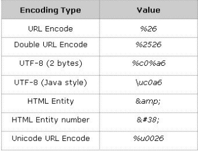

Client-side
1. First order HPP or Reflected HPP
2. Second order HPP or Stored HPP
3. Third order HPP or DOM Based HPP
Server-side
1. Standard HPP
2. Second order HPP
Multiple Occurances of a Parameter
Different web servers manage multiple occurrences in several ways
Some behaviors are quite bizarre
Whenever protocol details are not stronglydefined, implementations may stronglydiffer
Unusualbehaviors are a usualsource of security weaknesses(MANTRA!)
The precedence of GET/POST/Cookie may influence the application behaviors and it can also be used to override parameters

Several well-known encoding techniques may be used to inject malicious payloads
